Acid-Base-Titrations
Acid-Base Titrations
When doing a titration with an acid and a base:
-
Acid usually in beaker
-
Base usually in burette
- Titrant: usually in burette, slowly dropped into analyte (in beaker)
-
Indicator will change color: indicator should change color close to equivalence point
-
For DATA:
-
Burette: Initial/final volume, molarity
- 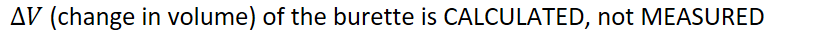{width="8.520833333333334in" height="0.3541666666666667in"}
-
Beaker: Volume, molarity, mass
-
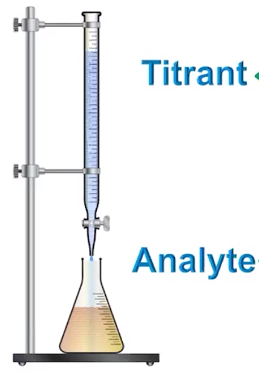{width="2.96875in" height="4.333333333333333in"}
-
Points:
-
Starting point: when no titrant has been added
-
End point: when the indicator undergoes a color change
-
Equivalence point: when enough titrant has been added to completely react with the analyte
-
-
Titration curve for strong acid and strong base:
-
Equivalence point: when the amount of titrant and analyte are equal for strong acids and strong bases
-
Strong acids and strong bases auto-disassociate, cancelling each other out
-
Molarity of acid = molarity of conjugate base
-
The acid and base would have neutralized each other perfectly
-
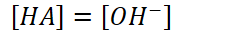{width="2.3541666666666665in" height="0.3333333333333333in"}
-
However, strong acids have conjugate bases that DO NOT react with water
- Auto-disassociation of water will direct the pH
-
Point at which change in pH is the greatest relative to base added
-
-
![14 7 [НА] > гон- А [НА] only РН due to excess Н + [НАД < он- А [НА] = [ОН-] он- equiv.pt. {width="4.864583333333333in" height="3.15625in"}
![он- А [НА] = [ОН-] он- equiv.pt.](../media/Unit-8-Acid-Base-Titrations-image4.png){kind=link}
-
Used to calculate unknown molarities
-
Known volume of titrant of known molarity is added
-
Moles can be determined by titrant
-
Use mole-to-mole ratio to determine moles of analyte
-
Use moles analyte and volume of analyte to determine molarity
-
-
-
For weak acids/bases:
-
Dilution
- VMVM
-
Stoichiometry
- How much conjugate is formed?
-
Equilibrium with conjugate and water
-
-
Titration curve for weak acid and strong base:
![[HQ] = [Q 1 eauiv.Dt. Q pH: Q¯( becau {width="4.59375in" height="3.1770833333333335in"}
{kind=link}
-
Starting point will be from equilibrium point
-
Acid has partially disassociated in water
-
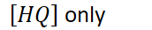{width="1.7916666666666667in" height="0.3541666666666667in"}
-
-
At equivalence point:
-
{width="1.8125in" height="0.3541666666666667in"}
-
{width="6.104166666666667in" height="0.3541666666666667in"}
-
However, conjugate bases of weak acids DO react with water
-
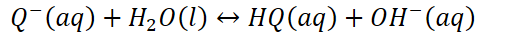{width="5.510416666666667in" height="0.3333333333333333in"}
-
pH at equivalence point will be a bit basic
-
Because of reaction of conjugate base disassociating with water
-
NOT because of the titrant is a strong base
-
-
-
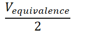{width="2.0104166666666665in" height="0.65625in"}
-
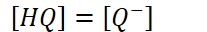{width="2.15625in" height="0.3333333333333333in"}
-
Half of weak acid has been neutralized
-
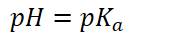{width="1.8541666666666667in" height="0.3333333333333333in"}
-
-
Dominant species:
-
{width="6.770833333333333in" height="0.3541666666666667in"}
-
{width="3.7083333333333335in" height="0.3541666666666667in"}
-
<!-- -->
-
First region is flat because partially disassociated acid is resisting the pH change from the added strong base
- Called the buffer zone
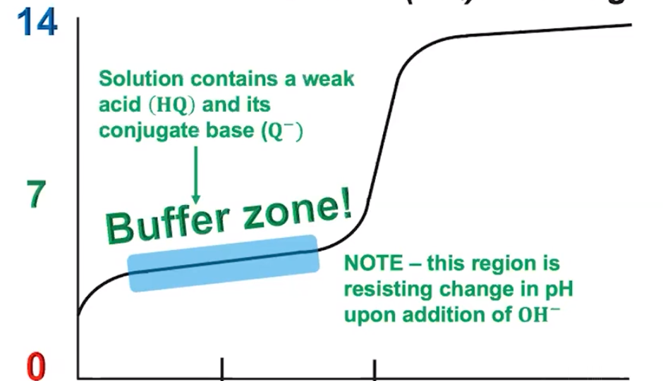{width="5.53125in" height="3.1770833333333335in"}
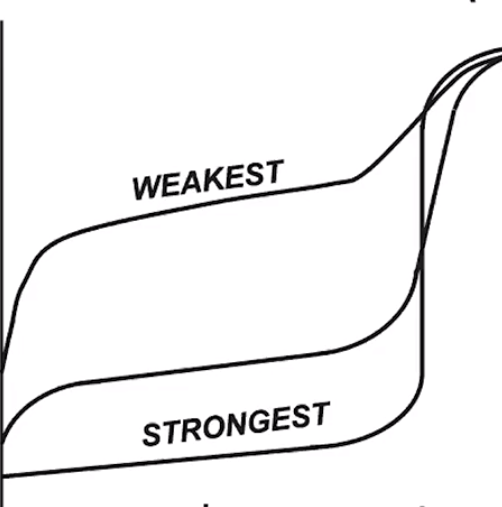{width="3.4791666666666665in" height="3.5104166666666665in"}
- For weak acids: less hydroxide buffer because less disassociation
- For stronger acids: more hydroxide buffer because more disassociation
<!-- -->
-
ASSUMING THE SAME STARTING MOLARITY: As strength of acid decreases,
-
Starting pH will increase
- Stronger acids will disassociate more, decreasing the initial pH
-
Larger jump to buffer zone
-
Higher pH at equivalence point
- The weaker the acid, the stronger its conjugate base (raises pH)
-
Titration curve for strong acid and weak base:
-
pH starts high because initially, the base is the only species present
-
At Equivalence point:
-
Weak base is fully titrated
-
Conjugate acid will be present ([HY+])
-
Conjugate acid will react with water and cause the solution to be acidic
-
pH is because of the reaction of the conjugate acid with water
-
Not because the acid is strong
-
-
-
At half equivalence point:
-
{width="6.354166666666667in" height="0.3541666666666667in"}
- 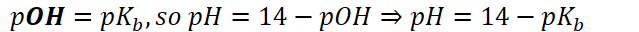{width="6.65625in" height="0.3333333333333333in"}
-
Before half equivalence point: weak base [Y] is dominant
-
After half equivalence point: conjugate acid [HY^+^] is dominant
-
-
At end: pH is dictated by excess H^+^, the excess strong acid
- Because [HY^+^] is weak acid, the H^+^ contribution at the end is negligible
{kind=link}
-
Buffer zone present at beginning due to presence of weak base and some conjugate acid
- Resists change in pH on addition of H^+^
-
Stronger base: (assuming same starting molarity)
-
Starting pH is higher
- Base disassociates more, increasing pH
-
Higher equivalence point: the stronger a base, the weaker its conjugate acid
- Will not bring down the pH as much
-
Smaller drop to buffer zone
-
-
Example:
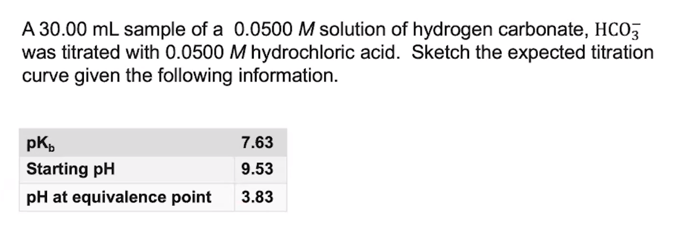{width="8.572916666666666in" height="3.0104166666666665in"}
Vey" Mess: . to
Molarities some
30 "L: Into = 0.0} AL
 {width="5.927083333333333in" height="4.46875in"}
{width="5.927083333333333in" height="4.46875in"}
. f
{width="0.6145833333333334in" height="0.13541666666666666in"}{width="0.4583333333333333in" height="2.1145833333333335in"}
- " .
Easy
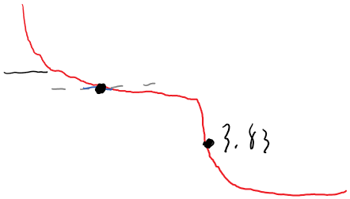{width="4.604166666666667in" height="2.625in"}
. 4-1.67=6.70
.
trey
{width="0.1875in" height="2.3125in"}
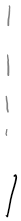{width="0.21875in" height="2.3020833333333335in"}
f f molarity not
-- - -- E size, assure
~ L
{width="1.1666666666666667in" height="0.13541666666666666in"}
I
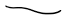{width="0.6770833333333334in" height="0.1875in"}